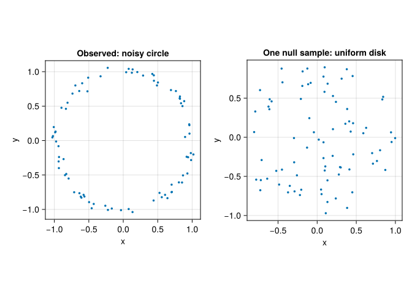
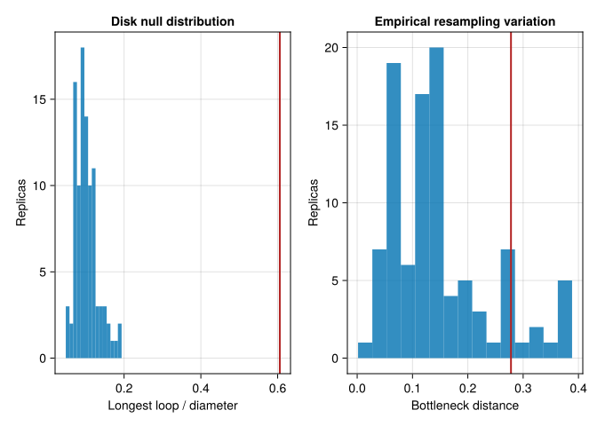

We have found a long bar. Shall we frame it and hang it on the wall? Perhaps. First we should ask what made it long.
Persistence measures a lifetime in the chosen filtration. It is not a probability, a significance level, or a certificate that we have discovered a scientific mechanism. A large loop can be caused by the phenomenon we care about, by the way we collected the observations, or by a preprocessing decision. Those possibilities deserve different questions.
9.1 Three questions, three kinds of evidence
Question
What to examine
What this does not establish
Does a small input perturbation change the diagram a little?
A stability bound for the specified filtration and input distance
Whether a feature has scientific meaning
Would another sample from the same population give a similar result?
Independent replicate datasets, subsampling, or an appropriate bootstrap
A universal null hypothesis of “no topology”
Is the observed summary unusual under a stated model?
A test statistic and simulations or permutations valid under that model
That the alternative explanation is uniquely correct
The stability theorem answers the first question. Statistical inference needs sampling and model assumptions as well. Confidence-set results for persistence diagrams are developed in (Fasy et al. 2014); their guarantees belong to their hypotheses, not to every script with a resampling loop.
9.2 A stated null model
Suppose our question is whether a cloud has more ring-like structure than we would expect from independent points uniformly sampled inside the unit disk. This is a deliberately specific null model. “There is no interesting structure” would be a much harder model to simulate!
We will compare a noisy circle with disk samples containing the same number of observations. To remove overall size from this particular comparison, use the longest finite \(H_1\) lifetime divided by the cloud diameter:
with \(T(X)=0\) when there are no finite loops. This is invariant under uniform scaling. It is still a summary of the chosen Rips filtration, not a complete description of shape.
┌ Warning: Found `resolution` in the theme when creating a `Scene`. The `resolution` keyword for `Scene`s and `Figure`s has been deprecated. Use `Figure(; size = ...` or `Scene(; size = ...)` instead, which better reflects that this is a unitless size and not a pixel resolution. The key could also come from `set_theme!` calls or related theming functions.
└ @ Makie ~/.julia/packages/Makie/UjJJY/src/scenes.jl:238

Figure 9.1: Two clouds with 80 observations: the noisy circle whose score we will test, and one independent sample from the uniform-disk null model.
Now simulate independent null datasets, recomputing the entire statistic for each one:
B =99observed_score =loop_score(observed)null_scores = [loop_score(sample_disk(rng, n)) for _ in1:B]p_value = (1+count(>=(observed_score), null_scores)) / (B +1)println("Observed score: ", round(observed_score, digits =3))println("Monte Carlo p-value: ", p_value)
Observed score: 0.606
Monte Carlo p-value: 0.01
The extra \(1\) in both numerator and denominator prevents a reported p-value of zero. With 99 null simulations the smallest possible value is \(0.01\). A larger simulation budget gives finer resolution, but it cannot repair an inappropriate null model.
Under this fully specified null, the observed sample and the null simulations would be exchangeable. The rank-based calculation is therefore a Monte Carlo test for that model, with conservative treatment of ties. Our seeded noisy circle was generated from a different model, so the example is designed to illustrate a rejection; it is not evidence about an unknown real population.
If we estimated the disk radius, selected the score, or tried many filtrations after inspecting the data, the calculation would need to account for those choices. Testing 20 variants and publishing the smallest p-value is not the same experiment as testing one prespecified statistic.
9.3 Sampling variation: an exploratory bootstrap
Resampling the observed points asks a different question: how sensitive is this observed diagram to the empirical sampling distribution?
┌ Warning: Found `resolution` in the theme when creating a `Scene`. The `resolution` keyword for `Scene`s and `Figure`s has been deprecated. Use `Figure(; size = ...` or `Scene(; size = ...)` instead, which better reflects that this is a unitless size and not a pixel resolution. The key could also come from `set_theme!` calls or related theming functions.
└ @ Makie ~/.julia/packages/Makie/UjJJY/src/scenes.jl:238

Figure 9.2: Left: scores under the stated disk null, with the observed score marked in red. Right: bottleneck distances from empirical bootstrap replicas to the observed diagram. These distributions answer different questions.
Repeated observations do not add geometric locations to a Rips complex. After drawing with replacement, we keep each selected location once; a replica therefore usually has fewer distinct points than the original sample. This preserves the geometric support of the resample while avoiding duplicate-point warnings. It would not be appropriate for an estimator that uses multiplicities as weights.
The radius contains approximately 90% of these bootstrap distances. We have not proved that it is a 90% confidence radius for the population diagram. Coverage for an underlying support or density requires an appropriate estimator, asymptotic conditions, and calibration; naive support resampling can behave poorly. Treat this small experiment as a diagnostic of empirical sampling variation, and consult (Fasy et al. 2014) before attaching a confidence claim.
A diagram point of lifetime \(\ell\) has \(L^\infty\) distance \(\ell/2\) from the diagonal. If a valid bottleneck confidence radius is \(c\), points with \(\ell>2c\) cannot disappear into the diagonal within that confidence set. The geometry explains the threshold; the statistical argument must establish the radius.
The examples here assume independent observations. Delay-embedding windows from one time series overlap and are dependent. Resampling those windows as though they were independent does not create valid independent replicates; use independent recordings or a resampling scheme justified for the temporal dependence.
9.4 Robustness has limits
Hausdorff stability does not make Rips persistence immune to outliers. A single distant observation can make the Hausdorff distance large. Likewise, changing the metric or bandwidth changes the question; it is not a small perturbation of a fixed analysis merely because the same data file is used.
Before interpreting a result, record:
which observations are independent sampling units;
the preprocessing, metric, filtration, and parameter-selection rule;
the statistic and null model, if a hypothesis test is intended;
which alternative explanations the topological summary cannot distinguish.
Independent replicate clouds can be compared through shared-grid landscapes or other summaries (Bubenik 2015). For prediction, fit preprocessing and vectorization on training data, choose parameters on validation data, and evaluate once on held-out data. The digits chapter follows that separation.
9.5 Exercises
9.5.1 1. A circle twice as large
If all coordinates are multiplied by \(2\), what happens to Rips birth and death values? What happens to \(T(X)\)?
NoteWorked answer
All pairwise distances, births, deaths, and lifetimes double. The diameter also doubles, so the normalized score is unchanged. An unnormalized persistence threshold would need to double to represent the same geometric decision.
9.5.2 2. A very small p-value
None of 99 null scores equals or exceeds the observed score. What p-value do we report, and does it prove that the data came from a circle?
NoteWorked answer
The p-value is \((1+0)/(99+1)=0.01\). It provides evidence against the specified uniform-disk model. Many alternatives, including sampling artifacts, can produce a large loop; the test does not uniquely identify a circle-generating mechanism.
9.5.3 3. A bootstrap confidence claim
Why is the empirical 90% quantile above insufficient, by itself, to claim 90% population coverage? What changes for overlapping time-series windows?
NoteWorked answer
The empirical bootstrap distribution must approximate the relevant sampling distribution, and the target estimator and calibration must satisfy appropriate conditions. The quantile alone proves no such approximation. Overlapping windows add dependence, so an independent-observation bootstrap is not justified without a dependence-aware argument.
Bubenik, Peter. 2015. “Statistical Topological Data Analysis Using Persistence Landscapes.”Journal of Machine Learning Research 16 (3): 77–102. https://www.jmlr.org/papers/v16/bubenik15a.html.
Fasy, Brittany Terese, Fabrizio Lecci, Alessandro Rinaldo, Larry Wasserman, Sivaraman Balakrishnan, and Aarti Singh. 2014. “Confidence Sets for Persistence Diagrams.”The Annals of Statistics 42 (6): 2301–39. https://doi.org/10.1214/14-AOS1252.